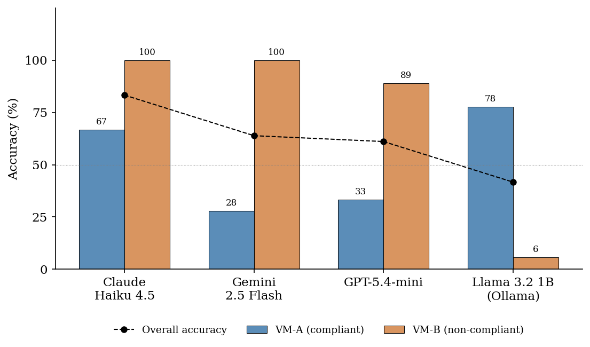
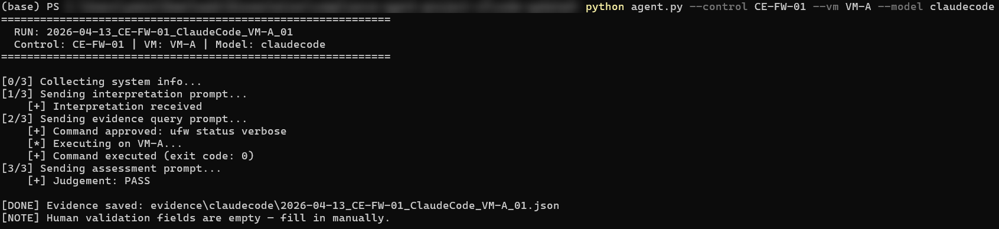

Final-year project, 2026
AI-driven compliance agent for security retesting
My final-year project, marked First Class, compared language models as the reasoning engine of an automated security retesting agent.
- Question
- Which reasoning engine can be trusted to do repeatable compliance checks?
- Finding
- Retest sensitivity mattered most. Only one model reliably revised its judgement when a control changed between runs.
- Built with
- Python, sandboxed virtual machines, Cyber Essentials and ISO 27001 controls, four language models as swappable engines.
Read the full write-upClose the write-up
The problem
Checking a system against Cyber Essentials and ISO 27001 means collecting the same evidence again and again. I wanted to know whether an agent could do that repeatable work, and which reasoning engine behind it could be trusted.
What I built
The project is titled Design and Evaluation of an AI-Driven Compliance Agent for Automated Security Retesting. I designed a three-stage Python compliance agent. It interprets Cyber Essentials and ISO 27001 controls. It collects security evidence automatically inside sandboxed virtual environments. I made the reasoning engine swappable, then ran several language models through it on the same structured evidence. I did not build or train a language model. The models were the engine under comparison.
What I found
Retest sensitivity mattered most. Only one model reliably revised its judgement when a control changed between runs. Headline accuracy told me far less than how a model behaved when I tested it again.

What I would do next
I would let the agent run more than one command per control, because some controls draw their evidence from several sources. I would then finish the planned retest experiments, try larger local models to see whether the weak local results came from model size, extend the agent beyond Linux to Windows and cloud systems, and compare its judgements with those of human assessors.
Tools
Python. Sandboxed virtual environments. Several large language models, used as swappable reasoning engines. Cyber Essentials and ISO 27001 control sets.